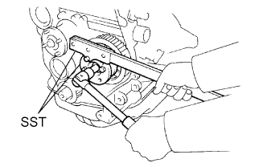

ТОПЛИВНЫЙ НАСОС ВЫСОКОГО ДАВЛЕНИЯ > УСТАНОВКА |
| 1. INSTALL INJECTION PUMP ASSEMBLY |
Temporarily install the injection pump to the timing gear case with the 2 nuts.
Temporarily install the injection pump stay to the injection pump rear end with the 3 bolts.
 |
Rotate the pump body to align the marks on the pump flange and timing gear case.
Tighten the 2 nuts.
Tighten the 3 bolts.
 |
Connect the 3 fuel hoses.
Connect the 5 connectors and attach the wire harness clamp.
| 2. INSTALL INJECTION PUMP DRIVE PULLEY |
|  |
Using SST, install the injection pump drive pulley with the nut.
| 3. INSTALL INJECTION PIPE SET |
Install the 2 lower clamps to the intake manifold.
Install the 4 injection pipes.
| *a | for Injection Nozzle Side |
| *b | for Injection Pump Side |
Install the 2 upper pipe clamps with the 2 nuts.
| 4. INSTALL DIESEL THROTTLE BODY |
Install the diesel throttle body (See page Нажмите здесь).
| 5. INSTALL TIMING BELT |
Install the timing belt (See page Нажмите здесь).
| 6. BLEED INJECTION PIPE |
Move the hand pump on the upper part of the fuel filter up and down and fill the injection pump and fuel system with fuel.
Loosen one of the union nuts (on the nozzle side).
Crank the engine until fuel comes out from the union nut connection (on the nozzle side).
Tighten the union nut.
Perform the procedures above for each injection pipe.